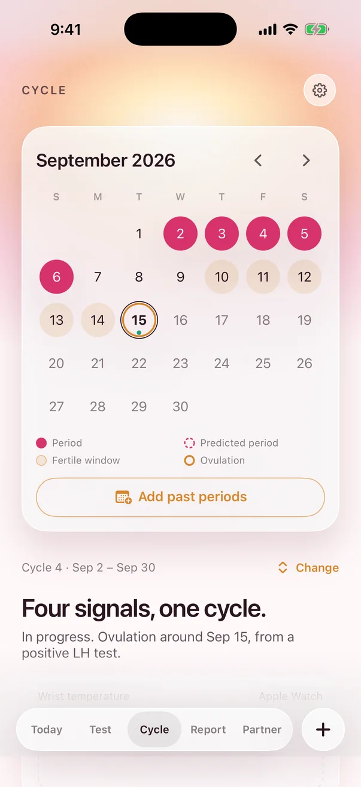
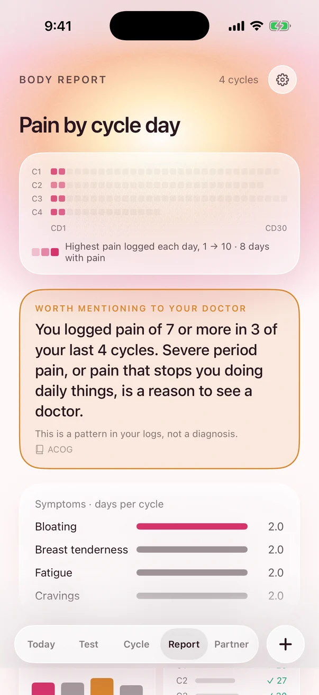
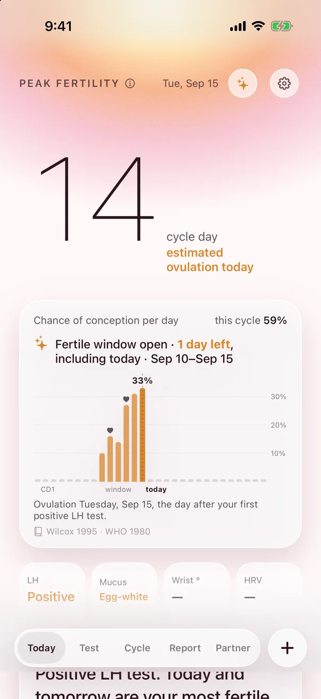
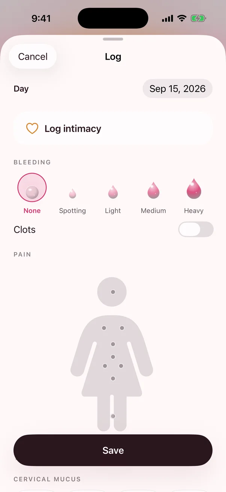
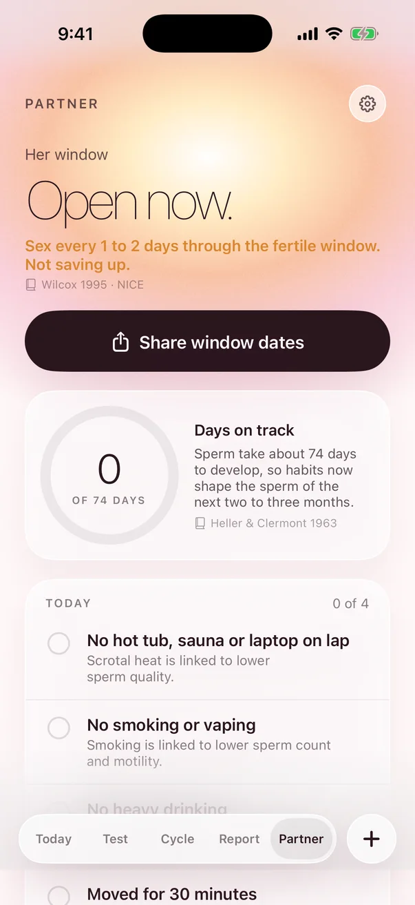

Cycle · Fertility · Pregnancy
Know your window.
WINDOW. reads your ovulation tests, your Apple Watch temperature and the days you log, then tells you where you are in your cycle today. Every number comes with its source.



How it works
Your cycle, not an average one.
Calendar apps assume ovulation 14 days before your period. WINDOW. starts there, then moves the estimate when your own signals say otherwise.
Only 13% of cycles in a study of more than 600,000 were exactly 28 days long. That's why WINDOW. uses your history instead of a fixed number.
Bull JR et al., npj Digital Medicine 2019 · doi.org/10.1038/s41746-019-0152-7
WHO Task Force, Am J Obstet Gynecol 1980 — ovulation about 32 hours after the LH surge begins.
The fertile window
Six days, and they're not equal.
In the landmark study WINDOW. is built on, pregnancy followed sex only in the six days ending on ovulation day. The chance rose toward ovulation. These are the numbers behind the Today screen.
Wilcox AJ, Weinberg CR, Baird DD. Timing of sexual intercourse in relation to ovulation. N Engl J Med 1995;333:1517–21 · doi.org/10.1056/NEJM199512073332301
Features
Everything in one calm place.
Today
Cycle day, phase, and what matters today, with the study behind every sentence one tap away.
Test strip reader
Point the camera at an LH or pregnancy test. It's read on your iPhone and the photo is never saved.
Apple Watch signals
Overnight wrist temperature and heart rate variability from Apple Health help confirm ovulation.
Tap where it hurts
Log pain on a body map, plus bleeding, mucus, mood, symptoms, sex and notes, in seconds.
Body Report
Pain by cycle day, mood by phase, cycle lengths, and a one-page PDF to bring to your doctor.
Pregnancy mode
Week by week, due date, a blood pressure log with ACOG thresholds, and when to call your clinician.
Two-week wait
Days past ovulation, when implantation usually happens, and the earliest day a test is worth taking.
Partner
Share window dates, and a simple daily habits checklist for him, each item with its source.
Ask, privately
Questions answered by Apple Intelligence on your iPhone, grounded in WINDOW.'s checked sources. iOS 26 on supported devices.
The app
Soft on the eyes. Serious about facts.


Screens show sample data · swipe →
Privacy
Your body. Your phone. Nobody else.
- No account, no sign-in, no email address.
- No ads, no analytics, no tracking, no third-party SDKs.
- Your logs are stored on your iPhone. We don't have a server to send them to.
- iCloud sync is off until you turn it on, and then it uses your own private iCloud.
- Test strip photos are read in memory and never saved.
- Reminders use discreet wording by default, so a lock screen doesn't reveal what they're about.
- Delete all WINDOW. data from Settings in one tap.
The full details, including Apple Health and iCloud, are in the privacy policy.
Pricing
Free to download. Premium if you want it.
First month $4.99.
7-day free trial.
Pay once, no subscription.
US prices. Subscriptions renew automatically unless cancelled at least 24 hours before the end of the period, and are managed in your Apple ID settings. Terms
Questions
Straight answers.
Can I use WINDOW. as birth control?
No. WINDOW. is not a contraceptive and is not a medical device. If you choose the "Avoiding pregnancy" goal, the app shows higher-chance days and CDC facts about birth control methods, and reminds you that no day of the cycle is guaranteed safe.
Do I need an Apple Watch?
No. Without a watch, WINDOW. works from your logged periods, LH tests and other signals. With a watch that records sleeping wrist temperature, the temperature rise after ovulation can confirm it.
Which test strips can it read?
Standard LH (ovulation) and hCG (pregnancy) strips. Hold the strip flat and sideways with the absorbent tip on the left. If a result is unclear, you can enter it manually.
Where is my data stored?
On your iPhone. If you turn on iCloud sync, your logs are also stored in your own private iCloud database under your Apple ID. We can't see either.
What devices does it support?
iPhone with iOS 17 or later. Ask uses Apple Intelligence, which needs iOS 26 and a supported iPhone. Apple Watch data arrives through Apple Health.
Where do the facts come from?
Peer-reviewed studies and guidance from bodies such as ACOG, NICE, the CDC, the FDA and the WHO. Every source is listed in the app under Settings, and each card shows which one it relies on.